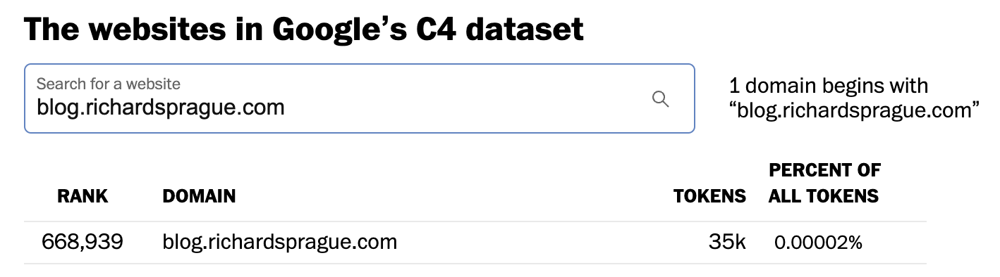
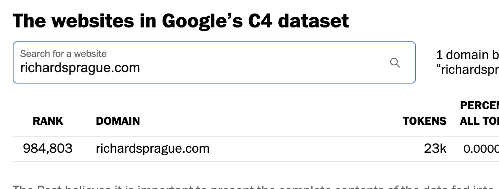
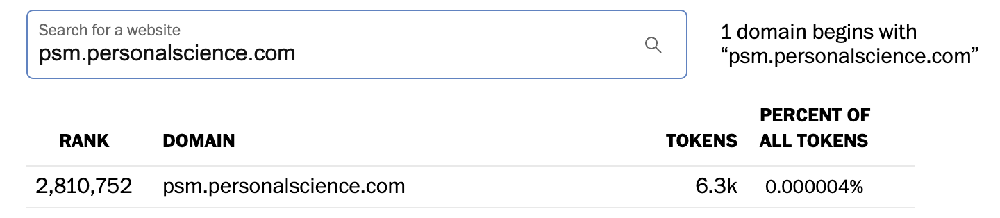

3 Inside the Black Box: Understanding What AI Actually Does
Demystifying AI’s real capabilities and limitations from an implementer’s perspective
3.1 About AI
Artificial intelligence is a broad field which long-time researchers often jokingly define as “anything computers can’t do yet”. From early grammar checkers to chess to facial recognition, many features that are now routine were once considered AI. No doubt the same will eventually be said of the new generation of large language models (LLMs), the more precise term to describe the impressive new tools that include ChatGPT. Under the hood, LLMs are less magical and based on a straightforward application of an optimization algorithm called Generative Pre-trained Transformer (GPT) invented by Google researchers in 2017.
You can think of LLMs as a massively optimized and expanded version of the auto-complete feature your smartphone has featured for years. Instead of proposing the next word or two, LLMs can generate full sentences, paragraphs, books, and on and on without limit. Its power comes from the GPT optimization that lets it take advantage of the massively-parallel architecture of graphic processing units (GPUs). Just as a graphical image can be broken into smaller pixels, each manipulated in parallel, LLMs break text documents into characters (or “tokens”) that are processed simultaneously within the GPU.
The GPT algorithm has one critical limitation: once set in motion, it cannot backtrack. Humans plan ahead, weigh different scenarios, and can change their minds based on foreseen alternatives. GPTs can only fake this planning ability through their access to mountains of data where such alternatives have already been explored. GPTs cannot do Sudoku, or handle chess boards not covered in its training books. Similarly, although it may appear to evaluate potential investment scenarios, it is merely spitting out a long stream of text that it harvested from options that were already evaluated somewhere in the bowels of its (massive) training sets.
It’s important to keep this “one-way” fact in mind when using LLMs. Because they have no concept of imagining how a future situation might change current plans, it would be wise to take its predictions with caution.
LLMs are models that compress all human knowledge – written, spoken, images, video – into a format that can generate similar-seeming content when given a starting prompt. Although the final models themselves are small enough to fit on a laptop or smartphone, they are created through a training process that consumes massive amounts of data — virtually everything on the public internet, plus collections of the text from millions of books, magazines, academic journals, patent filings, and anything else its creators can find.
Thanks to a clever, time-saving shortcut discovered in the 2017 GPT algorithm, key parts of the training happen in parallel, limited only by the number of GPUs available. It’s this optimization that explains the mad rush to buy GPUs, the chief beneficiary of which is Nvidia, thanks to its decades-long leadership in these fast processors. Although Nvidia chips were originally designed for fast graphics, their wide adoption means that many engineers are well-acquainted with CUDA, the low-level graphics programming software that powers Nvidia devices. When designing the various implementations of GPT, it was natural for developers to optimize for CUDA, further cementing Nvidia’s lead.
Once trained, the LLM is a statistical prediction engine that knows the most likely word, phrase, or paragraphs that follow any given input. It knows, for example, that the phrase “Mary had a little” is highly likely to be followed by “lamb” or even the entire phrase “Its fleece was white as snow”. It will apply the same statistical completion algorithm to any snippet of text, including those that look like questions, where the most likely “completion” is the answer to the question. For example, the statistically most likely way to complete the phrase “what is 1 + 1?” is “2”.
The final LLM consists of billions of “parameters”, finely-tuned statistical values created during the training process. But generating the response to your input requires similar levels of prodigious machine power. In fact, every character you type into the ChatGPT input box, as well as every character it types back, goes through many billions of computations. That slight delay you see as each character comes back at your terminal is not a clever UX effect intended to appear like a human is typing the answer. In fact, the characters come out slowly because of the untold levels of computing power required to generate each one of them. Multiply this by the many millions of simultaneous ChatGPT users and you can understand why state-of-the-art LLMs are phenomenally expensive to operate.
Although these completions can be uncannily realistic, it’s important to keep in mind that it’s just auto-completion. Just as you would want to review an auto-complete suggestion before sending a reply on your smartphone, your ChatGPT answers require a similar level of skeptical scrutiny.
3.2 How does an LLM-based generative system work?
Imagine you have access to a zillion documents, preferably curated in some way reassures you about their quality and consistency. Wikipedia, for example, or maybe Reddit and other posts that have been sufficiently up-voted. Maybe you also have a corpus of published articles and books from trustworthy sources.
It would be straightforward to tag all words in these documents with labels like “noun”, “verb”, “proper noun”, etc. Of course there would be lots of tricky edge cases, but a generation of spelling and grammar-checkers makes the task doable.
Now instead of organizing the dictionary by parts of speech, imagine your words are tagged semantically. A word like “queen”, for example, is broken into the labels “female” and “monarch”; change the label “female” to “male” and you have “king”. A word like “Starbucks” might include labels like “coffee”, as well as “retail store” or even “Fortune 500 business”. You can shift the meaning by changing the labels.
Generating a good semantic model like this would itself be a significant undertaking, but people have been working on this for a while, and various good “unsupervised” means have been developed that can do this fairly well. For example, one trick might be to assign labels based on the types of words nearby. The word “Starbucks” means “Fortune 500 Business” if you find it in a paragraph containing words like “earnings” or “CEO”; but it means “coffee” if you see words like “$4.95” or “latte”. This won’t be perfect, but you can imagine how it could get to be pretty good if you train on enough text.
3.3 Statistics of Words
This system works because words aren’t laid out randomly. Languages constrain the way words can follow one another. There are grammatical rules that determine word order, and there are additional semantic rules that further constrain which sentences make sense. “Colorless green ideas sleep furiously” is a grammatically valid sentence, but it makes no semantic sense and is extremely unlikely to occur. You and I know these rules because we’ve been living in the real world for many years. A computer can deduce most of these rules statistically as you give it more data.
The auto-completion feature, now ubiquitous in all word processors and mobile phones, is a simple application of the power of statistics combined with language. With any sized corpus, you’ll know with reasonable probability the likelihood that a particular word will follow another word. Interestingly, you can do this in any human language without even knowing about that language – the probabilities of word order come automatically from the sample sentences you have from that language.
Now go a step above auto-completion and allow for completion at the sentence level, or even the paragraphs or chapters. Given a large enough corpus of quality sentences, you could probably guess with greater-than-chance probability the kinds of sentences and paragraphs that should follow a given set of sentences. Of course it won’t be perfect, but already you’d be getting an uncanny level of sophistication.
Pair this autocompletion capability with the work you’ve done with semantic labeling. And maybe go really big, and do this with even more meta-information you might have about each corpus. A Wikipedia entry, for example, knows that it’s about a person or a place. You know which entries link to one another. You know the same about Reddit, and about web pages. With enough training, you could probably get the computer to easily classify a given paragraph into various categories: this piece is fiction, that one is medical, here’s one that’s from a biography, etc., etc.
Once you have a model of relationships that can identify the type of content, you can go the other direction: given a few snippets of one known form of content (biography, medical, etc.), “auto-complete” with more content of the same kind.
This is an extremely simplified summary of what’s happening, but you can imagine how with some effort you could make this fairly sophisticated. In fact, at some level isn’t that what we humans are already doing. If your teacher or boss asks you to write a report about something, you are taking everything you’ve seen previously about the subject and generating more of it, preferably in a pattern that fits what the teacher or boss is expecting.
Some people are very good at this: take what you heard from various other sources and summarize it into a new format.
“List five things wrong with this business plan”, you don’t necessarily need to understand the contents. If you’re good enough at re-applying patterns you’ve seen from similar projects, you’ll instinctively throw out a few tropes that have worked for you in the past. “The plan doesn’t say enough about the competition”, “the sales projections don’t take X and Y into account”, “How can you be sure you’ll be able to hire the right people”. There are thousands, maybe hundreds of thousands of books and articles that include these patterns, so you can imagine that with a little tuning a computer could get to be pretty good too.
3.4 Fine-tuning the output
Simple text-completion will only get you so far1. Usable systems need refinement to make them behave more in the way we expect.
Reinforcement learning works by applying a reward or penalty score to the output and then retraining recursively until the model improves to an acceptable level.
Reinforcement learning with human feedback (RLHF) takes this a step further by including humans in the reward formula. The system generates multiple versions of an answer and a human is asked to vote on the best one.
Reinforcement learning with AI feedback (RLAIF) tries to use the AI itself to provide the feedback
see Thomas Woodside and Helen Toner: How Developers Steer Language Model Outputs: Large Language Models Explained, Part 2 for a detailed but readable discussion.
3.5 Wisdom of the crowds
An LLM is sampling from an unimaginably complex mathematical model of the distribution of human words – essentially a wisdom of crowds effect that distills the collective output of humanity in a statistical way.
3.6 Where do you get the documents
OpenAI gets its documents from more than 200 million documents, 93% of which are in English, that are selected to be representative of a broad space of human knowledge.
Of course it starts with Wikipedia: almost 6 million articles.
One set of words comes from Common Crawl: a large, public-domain dataset of millions of web pages.
Another is a proprietary corpus called WebText2 of more than 8 million documents made by scraping particularly high-quality web documents, such as those that are highly-upranked on Reddit.
Two proprietary datasets, known as Books1 and Books2 contain tens of thousands of published books. These datasets include classic literature, such as works by Shakespeare, Jane Austen, and Charles Dickens, as well as modern works of fiction and non-fiction, such as the Harry Potter series, The Da Vinci Code, and The Hunger Games.2 There are also many other books on a variety of topics, including science, history, politics, and philosophy.
Also high on the list: b-ok.org No. 190, a notorious market for pirated e-books that has since been seized by the U.S. Justice Department. At least 27 other sites identified by the U.S. government as markets for piracy and counterfeits were present in the data set.
Washington Post has an interactive graphic that digs into more detail. (Also discussed on HN)
Yes, they crawl me:



from NYTimes

3.7 Organizing the data
At the core of a transformer model is the idea that many of the intellectual tasks we humans do involves taking one sequence of tokens – words, numbers, programming instructions, etc. – and converting them into another sequence. Translation from one language to another is the classic case, but the insight at the heart of ChatGPT is that question-answering is another example. My question is a sequence of words and symbols like punctuation or numbers. If you append my question to, say, all the words in that huge OpenAI dataset, then you can “answer” my question by rearranging it along with some of the words in the dataset.
The technique of rearranging one sequence into another is called Seq2Seq*.